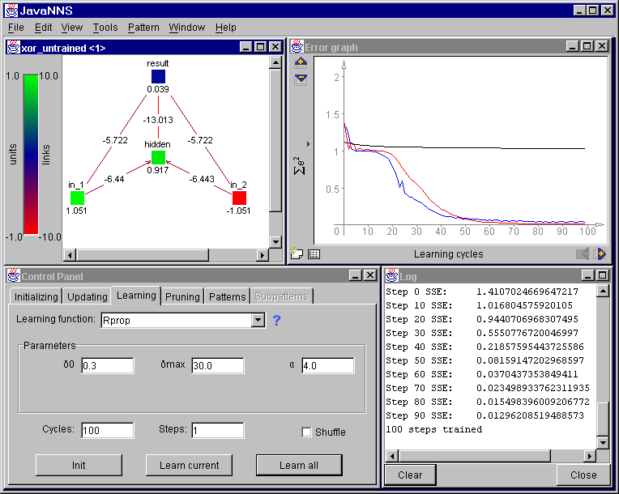

| Home |
| Introduction |
| Licensing |
| Installation |
| Quick Tour |
| Networks |
| Patterns |
| Training |
| Analyzing |
| Files |
| Formats |
| Examples |
A Quick Tour of JavaNNSJavaNNS is a simulator for artificial neural networks, i.e. computational models inspired by biological neural networks. It enables you to use predefined networks or create your own, to train and to analyze them. If any of these terms is unknown to you, please refer to a book about neural networks or to the SNNS User Manual - this manual describes only the usage of JavaNNS. Starting JavaNNSTo begin the tour, let's start JavaNNS, as described in "Installing": type java -jar JavaNNS.jar or, if using Windows, click the JavaNNS.bat file. After starting the program, its main window opens. As we have started the program no parameters in the command line, the window is empty, containing only the usual menu bar. Also, no network files have been loaded. Loading FilesUse File/Open menu to open an example file: navigate to the examples directory and open the files xor_untrained.net, and xor.pat - a simple network and a corresponding pattern file. View NetworkThe main window still remains empty, so choose View/Network to display the network. You should see a new window appearing, schematically showing a network, consisting of 4 units (neurons) and links between them, in its main part. Neurons and links have different colors, representing different values of unit activations and link weights. The colored bar on the left edge of the window shows which color corresponds to which value and can be used as reminder. The colors - and appearance in general - can be adjusted through View/Display Settings, which corresponds to the Display/Setup window in SNNS. Training NetworkLet us now train the network - reprogram its weights, so that it gives the desired output when presented an input pattern. For that purpose, open the Control Panel in the Tools menu. The Control Panel is, as in the SNNS, the most important window in the simulator, because almost all modifications and manipulations of the network are done through it. We shall also open the Error Graph window, in order to watch the training progress. Finally, to receive some textual and numerical information, we can open the Log window. Both are accessible through the View menu. A sample screen shot with the windows open is shown in Figure 1. The Control Panel is, contrary to the one in SNNS, divided into six tabs, each containing controls for specific purpose. For this introduction, let us switch directly to the learning tab. Here, the user can choose the learning function, set its parameters, number of learning cycles and update steps and finally perform network initialization and learning. The classic Backpropagation (equals Std_Backpropagation in SNNS) is the default learning function. As you can see, for each learning function default parameters are provided. Learning is performed by pressing one of the buttons: "Learn current" which performs training with the currently selected pattern, and "Learn all", which trains the network with all patterns from the pattern set. During learning, the error graph displays the error curve - the type of error to be drawn is set on the left edge of the window. The error is also written into the log window.

Figure 1: JavaNNS with XOR network, error graph, control and log panel (click the image to view it at its natural size) Analyzing NetworkFor analyzing the network and its performance, tools like Analyzer (in the Tools menu) and Projection (in the View menu), already familiar to SNNS users, can be used. For Projection, two input units and a hidden or output unit have to be selected in order for the menu item to become enabled. The Projection Panel than displays the activation of the hidden or output unit as a function of the two inputs. The activation is represented by color, so a colored rectangle is obtained. Analyzer is used to show output or activation of a unit as a function of other unit's activation or of the input pattern. Its usage is similar to the Analyze panel in the SNNS. Creating a NetworkNow let's create a network of our own. Choose File/New to remove the current network from the simulator. Then, choose Create/Layers from the Tools menu. A window resembling the Bignet tool of SNNS appears. Choose width and height "1", unit type "Input" and click "Create" to create a new layer. For the next layer, set height to five and the unit type to "Hidden" and click "Create" again. Finally, create the output layer with the height of one and unit type "Output" and close the window. To connect the created units, use Create/Connections from the Tools menu. Simply choose "Connect feed-forward" and click "Connect". Doing that, you have created a simple feed-forward neural network, with one input, five hidden and one output unit. You can now close the Connections window, too. Graphical Network DisplayYou can arrange units on the display manually, by clicking and dragging them with the mouse. In fact, clicking a unit selects it, and dragging moves all selected units. To deselect a unit, press the CTRL-Key on the keyboard and click it while still holding the key pressed. Using View/View Settings, tab Units and Links, you can choose what to display above and under each unit. Make sure that "Name" is selected as top label. Since the units have just been created, they are all called "noName". To change the names, choose "Names" from the Edit menu. The top labels turn to text fields. Use the mouse to place the caret into each one and enter some names. After you have finished, press "Enter" or click in an empty are of the display to turn the text fields to labels again. Training and Validation Pattern SetsTo see how two pattern sets can be used for training and validation, load two pattern sets from "examples" directory: trainMAP.pat and validMAP.pat. In the Control Panel, tab "Patterns", select trainMap as the training set and validMAP as the validation set. Switch back to the "Learning" tab and train the network. During training two curves are displayed in the Error Graph: one, who's color depends on the number of already displayed curves and which represents the error of the training set, and the other, pink one, which represents the error of the validation set. The validation set is normally used to avoid overtraining of a network. For more information refer to the SNNS User Manual and other neural networks literature. Last change: Igor Fischer, Thu May 16 14:13:36 2002 GMT Page 5: JavaNNS-manual-4.html |
{kind=link}